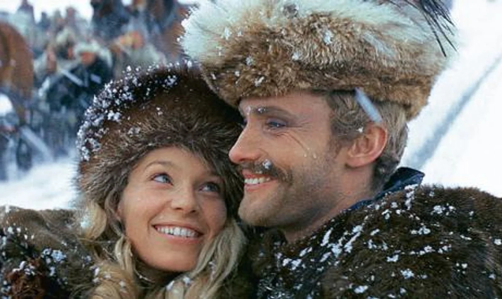

Tkaczyk News
SERWIS INFORMACYJNY
Recenzja książki "Potop"
"Potop" jest drugą częścią "Trylogii" Henryka Sienkiewicza. Jest to najdłuższa część, a oprócz niego w skład "Trylogii" wchodzą "Ogniem i Mieczem" oraz "Pan Wołodyjowski". Tak jak pozostałe części opisuje pewien okres w historii. W tym przypadku jest to najazd Szwedów na ziemie polskie w latach 1655-1660. Przede wszystkim autor przedstawia w swojej książce problem zdrady i wierności. Wiąże się z tym ukazanie dwóch faz konfliktu między Polakami a Szwedami, podczas którego bardzo ważną rolę odegrała postawa szlachty wobec sytuacji oraz ich zdrada. W powieści tej znajdują się zarówno bohaterowie autentyczni (np. Radziwiłł) jak i fikcyjni, czyli przede wszystkim Kmicic, który w czasie trwania akcji powieści przechodzi metamorfozę. W "Potopie" poruszonych zostaje wiele tematów: miłość, zdrada, wierność, rozpacz. Obok opisu wojny, mamy także wątek miłosny. Sienkiewicz koloryzuje nieco historię, zmienia fakty, mało miejsca poświęca porażkom Polaków, podczas gdy zwycięstwa Polaków zajmują wiele miejsca. Można wręcz powiedzieć, że manipuluje czytelnikiem, aby ten miał wrażenie, że Polska jest potężna, a wiek XVII był wiekiem jej triumfu. Usprawiedliwiają go okoliczności oraz cel w jakim pisał tę niezwykłą powieść. Dlatego mimo wszystko chciałabym gorąco polecić tę książkę, bo mimo iż jest długa i znajduje się na liście obowiązkowych lektur czyta się ją bardzo dobrze i zadziwiająco szybko. Uważam, że jest to jedna z najlepszych polskich powieści.
Nasza ocena: 9/10